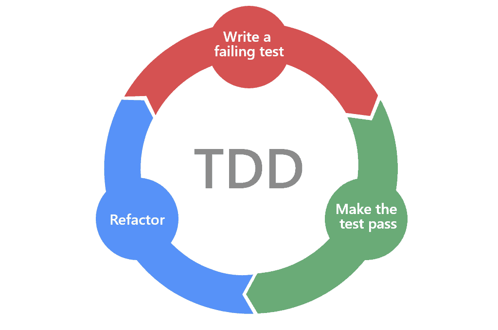

Mis on test-driven development?
Test-driven development (TDD) on tarkvaraarendusmeetod, kus testid kirjutatakse enne koodi. Meetodi peamine eesmärk on tagada kõrge koodikvaliteet ja vältida vigu arenduse varases staadiumis. TDD tsükkel koosneb kolmest põhisammust: kirjuta test, kirjuta kood, refaktoreeri.
TDD aitab arendajatel keskenduda tarkvara käitumisele ja kvaliteedile, pakkudes samas varajast tagasisidet koodi töökindluse kohta. Seda meetodit kasutatakse sageli koos agiilsete arenduspraktikatega.

TDD eelised ja puudused
Eelised:
- Kvaliteet ja töökindlus: Kõrge testikate ja pidev tagasiside aitab vältida regressioonivigu.
- Selgemad nõuded: Testide kirjutamine enne koodi selgitab nõudeid ja funktsionaalsuse ulatust.
- Kergem hooldada: Pidev refaktoreerimine hoiab koodi selge ja hästi struktureeritud.
- Kiirem probleemide tuvastamine: Vead avastatakse varajases faasis, mis vähendab paranduskulusid.
Puudused:
- Aeganõudev: Testide loomine ja hooldamine võib alguses olla ajamahukas.
- Nõuab distsipliini: Arendajad peavad rangelt järgima TDD tsüklit.
- Kõik ei pruugi olla testitav: Mõned süsteemiosad, nagu kasutajaliidesed või väliste teenuste integratsioonid, võivad vajada täiendavat lähenemist.
Näide vahendist: JUnit
JUnit on populaarne Java-põhine testiraamistik, mis toetab TDD-d.
- Funktsioonid: Võimaldab luua ja käivitada üksusteste, toetades automatiseeritud testimist.
- Sobivus TDD-ga: JUnitiga saab kiiresti kirjutada teste enne koodi ja integreerida need pideva integratsiooni tööriistadega, nagu Jenkins või GitHub Actions.